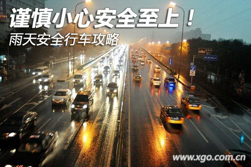
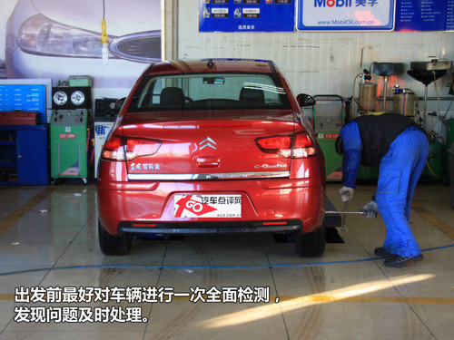
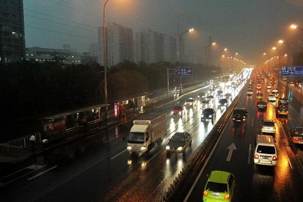
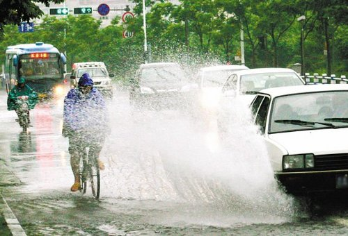
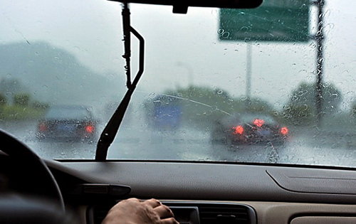
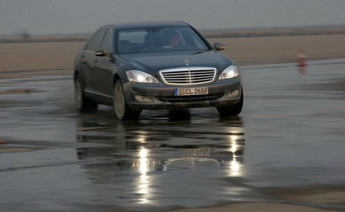

雨季开车实用攻略
进入6月也预示着雨季的降临，车主们在关注防暑降温的同时，还要关注雨天驾车的安全问题。为此我们从多位驾驶经验丰富的老司机哪里，了解到了不少他们在行车、涉水、视线、轮胎以及紧急情况处理等方面经验。在这里和大家分享一下....

●出行前的检查莫忽视
雨天行车会对轮胎提出更高的要求。雨季胎纹的深度不可少于2至3毫米，最好能保证在4毫米以上。因为胎纹深度过低，容易在胎面和水面间形成水膜，造 成汽车跑偏、甩尾和制动距离加长等情况。测量胎纹深度最好使用专用测量尺，如果没有，可以用硬币或小木棍代替。另外，过低的胎压也会加剧打滑程度。胎压过 低虽然增加了轮胎与地面的摩擦力，从而增加了附着力，但相对于轮胎与地面单位面积的压强减小，这个附着力是非常有限的。汽车在雨中刹车，最重要的是要有足 够的压强把轮胎与路面间的雨水排开，让汽车停稳，因此在雨天保持较高的胎压才比较安全。

另外，最好在雨季来临之前，到4S店给车辆来一个全面的检查，比如：轮胎、刹车等部件，有些年头较长的车ABS系统可能会出现衰减或是失效的情况，还有轮胎如果磨损过度也是非常危险的，这些都是事前需要您检查更换的。
●雨天行车稳字当头
在大雨天行车尽量低速行驶，如果需要停车，最好提前100米左右就开始减速、轻点刹车，给后面的车辆留出足够的应对时间。在行车中尽量与前车保持一 定的距离，不要跟车太近，更不要频繁超车。尤其在超越大型车辆时，大车溅起的水花会让小车司机在几秒钟内看不清车外的情况，这样就很容易发生意外。”

雨天行车保持车距是安全的关键
雨天行车更需要注意路边的行人。雨天行人不是打伞就是穿雨衣，视觉、听觉能力会不同程度地降低，往往当汽车行驶到身边才会发现。所以雨天行车遇到行人时，应减速慢行多鸣笛，耐心避让，切不可与行人或非机动车抢道。
●高速过水“损人不利己”
通常来说,只要路面的积水不超过大半个车轮,车辆都可以正常通过。汽车涉水时,应保证发动机运转正常、转向和制动机构灵敏可靠的情况下进行。应挂低 速挡平稳驶入水中,稳住油门,保持汽车有足够而稳定的动力一次通过,尽量避免中途停车、换挡或急转弯,尤其是水底路为泥沙时,更要注意做到这一点,避免大 轰油门或猛冲,防止水花溅入发动机而熄火。

驶过水坑时要减速
需要注意的是,涉水行车时切忌“快”,一来过快的车速会引起波浪对路上车辆或者行人造成冲击；二来过快的车速会将水冲起来,从而让水吸进空气滤清 器,最终导致的结果就是发动机进水熄火。多车涉水时,绝不可同时下水,以防前车因故障停车,迫使后车也停在水中,导致进退两难。若汽车在水中熄火,切不可 立即起动,以免严重损伤发动机,而应尽快采取措施把汽车拖到积水少的安全地点。
●保持良好视线

保证视线的清晰
雨天特别是下暴雨时会严重影响行车视线，所以雨天开车除要谨慎驾驶、保证车辆机械正常工作外，还要保持良好的行车视线。雨天行车使用前大灯会形成炫 目的光幕，要避免使用前大灯而改用雾灯。因为雨天行车需要关闭车窗，前挡风玻璃很容易产生霜气，此时需要打开冷气吹向前挡风玻璃；后挡风玻璃出现霜气时， 需打开后挡风玻璃加热器，尽快消除霜气。如果雨刷器扫水不彻底，使雨水“沾”在车玻璃上，可以将车蜡涂在车窗上，使玻璃表面形成蜡膜，改善视线范围。在没 有车蜡的情况下还可用肥皂、烟蒂或找一些稍厚、水分含量较多的树叶，捏碎后涂在挡风玻璃上，照样能起作用。
●紧急情况巧处理
雨天行车时遇到前方的突发事件，应采取点刹制动或是顺序降挡(俗称用挡别)的方式来控制车速，切不可大力刹车或是急打方向，这样会造成车辆发生侧滑 的危险。另外，由于雨水与轮胎之间会形成水膜，汽车制动性能降低，容易产生侧滑。为了预防车辆侧滑，在起动、停车、转弯时不应过急，使用制动时要采用点 刹，避免轮胎抱死。因制动原因造成侧滑，应立即取消制动，减小油门，如果是前轮侧滑，应反打方向，反打方向时注意不能过急或时间过长，否则车辆可能向相反 的方向滑动；如果是后轮侧滑，要将方向朝侧滑的一侧纠正，切不可打反方向。

处理危险状况要果断
雨天行车还会遇到车轮陷入泥坑的情况。一旦汽车陷入泥坑，应先挂上倒挡，然后改变车轮行进方向，最后挂入低速挡，利用发动机的冲力驶出泥坑。如果汽 车继续打滑无法前后移动，要立即停止轰油，挖去泥浆或设法支起车轮，在驱动轮前后垫些柴草、石块、砖头、木板、树枝或者在驱动轮上缠绕绳索，以便加大车轮 的抓地力防止倾覆，使汽车平稳开出泥坑。
遇到电闪雷鸣的天气，有的司机害怕闪电击中汽车，所以选择下车避雨，其实大可不必采取这种方法，因为一方面有可能遇到盗抢；另一方面，闪电击中汽车，电流会经车身表面传到地面，人在汽车内部是不会感觉到的，不过前提是车窗一定要全部关紧并收起收音机天线。
来源：汽车点评网
|